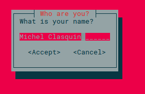
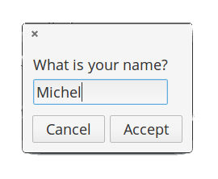

Yabasic libraries (c) Michel Clasquin-Johnson 2018. Licensed accordingto the MIT license
If you are reading this as a man page, be advised that you can see it in glorious HTML, with pictures even, at https://clasqm.github.io/
Extension libraries for yabasic.
A series of libraries for yabasic , the BASIC dialect by Marc Ihm, that give access to a number of common utilities on Linux, mostly intended to provide standard dialogs. Not tested on other UNIX platforms, but it should be possible to adjust them accordingly.
This does not make yabasic able to write full-on graphical programs, like its own derivative yab on the Haiku platform, but it does allow you to use yabasic as the backend for "wizard"-style applications.
This software is still very much in the alpha stage. The routines in the libraries work, but need a lot of optimization and error-trapping.
The library should exist either in the same folder as your program (symlinks work) or in the standard yabasic library location on your system. There is a .deb file available for those of you who are on Debian-derived systems, but I am pretty new at building .deb files, so I would appreciate feedback!
Developed on elementary OS 0.4 "Loki" and Lubuntu 18.04 (i.e. Linux), but it should work on any *NIX system that will run yabasic. Testing on Windows has been far more sketchy, since I don't have a windows box here, but I did what I could in my lunch break at work ;-). Don't tell my boss.



For instructions, see the separate README file for each of these libraries. Each library also comes with a test.bas file in which each new function is supplied with an example. Just remove the comments from the example you want to test, save the changes and run the command
yabasic test.bas
within the same folder where the library resides.
There is also a demo folder where some of the capabilities of the system are demonstrated in short programs. See here for instructions.
Please note that the libraries that give access to dialog boxes cannot be mixed in the same program, as they will create an unholy mess of namespace confusion. Pick one and stick with it! However, the linuxmisclib library can be safely combined with any one of the others.
The four external dialog-providing routines have common commands as well as dialog-specific ones. If your program sticks religiously to the common routines, you will be able to change it from, say, zenity to kdialog by changing a single import statement.
Get it here: https://github.com/clasqm/yabasiclibs